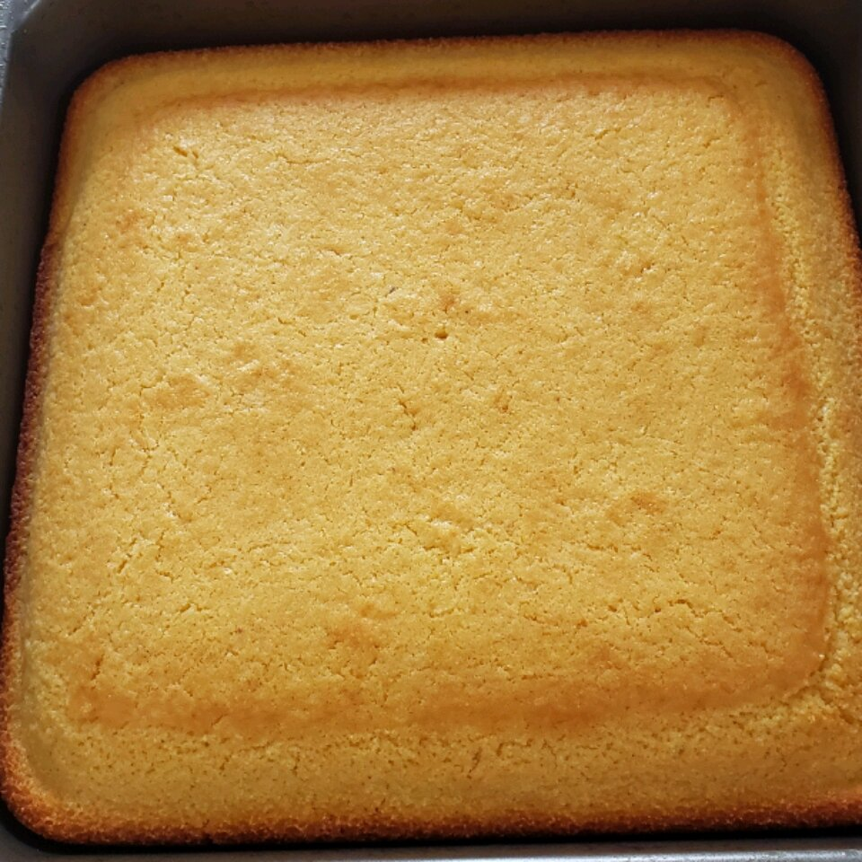

Golden Sweet Cornbread Recipe

The Golden sweet Cornbread in its glory!
If you like sweet cornbread, this is the recipe for you!
My mom made this for me as a child, and now it's my family's favorite.
Per Serving: 189 calories; protein 3.1g; carbohydrates
28.2g; fat 7.4g; cholesterol 17.1mg; sodium 353.9mg.
Ingredients
- 1 cup all-purpose flour
- 1 cup yellow cornmeal
- ⅔ cup white sugar
- 1 teaspoon salt
- 3 ½ teaspoons baking powder
- 1 egg
- 1 cup milk
- ⅓ cup vegetable oil
Steps
- Preheat oven to 400 degrees F (200 degrees C).
Spray or lightly grease a 9 inch round cake pan.
- In a large bowl, combine flour, cornmeal, sugar, salt
and baking powder. Stir in egg, milk and vegetable oil
until well combined. Pour batter into prepared pan.
- Bake in preheated oven for 20 to 25 minutes, or until
a toothpick inserted into the center of the loaf comes
out clean.
Go Back